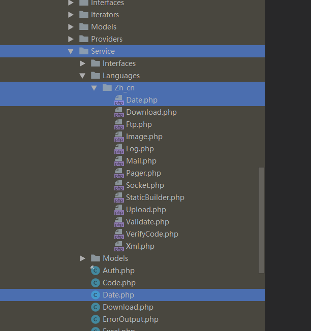
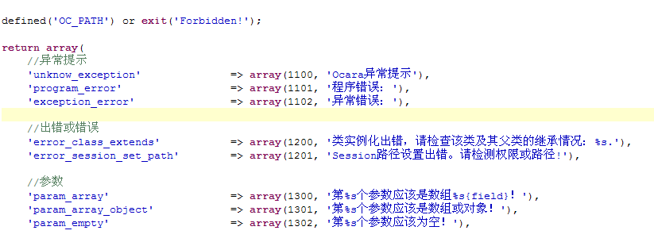

多语言功能
本框架支持多语言开发，除了Web应用的一般多语言功能，对于框架的扩展插件也可以进行多语言配置。
当前Web应用的多语言
一、配置目录介绍
就是Web应用中一般使用到的多语言。
语言配置目录是当前Web应用的resource/lang目录。比如，中文简体版就是在resource/lang/zh_cn目录。
其中的各个语言目录结构跟系统配置目录conf一样，也包括control和model目录，配置文件的加载顺序也一样。
其中的model目录，用于配置数据表的字段描述文本，可作为表单的字段显示文本
二、配置方法
写多语言配置，主要是针对$LANG配置数组。
该数组与系统配置$CONF不同的是，一维元素的键名不需要大写.
其中有control和model两个目录，以及全局语言配置文件，下面分别进行介绍。
1、控制器的多语言配置（control目录）
该目录是控制器的多语言目录，是当前MVC路由（模块、控制器或动作）要用到的语言配置，其中的子目录是与MVC路由同名的目录。
这些配置只有当前MVC中会加载并有效，不会影响其他模块。
如果同一个语言配置在多级目录的配置文件中都有，那么只有最下一层目录中的该配置有效，如下实例：
（1）目录结构实例
如上图所示，目录结构说明如下：
（a）在admin模块下面有test.php配置文件和item控制器目录
（b）item控制器目录中有一个test2.php和edit动作目录
（c）edit动作目录有一个test2.php和test子目录
（c）test子目录中保存了一个test3.php配置文件
假设这些配置文件都配置了同一个配置$LANG['action_success']。
那么，不管这些文件将该配置设置成何值，都只有最下层的edit/test/test3.php中的这个配置有效。
反之，假设edit下面没有test/test3.php或该该文件没有这个配置，则它的上级目录中的edit/test2.php中的这个配置有效。
（2）具体实例
（1）语言配置
在control目录中新建了一个user控制器目录，其中有个edit动作目录，下面有新建了message.php文件，配置代码如下：
/*
* 表单配置
*/
$LANG['error'] = array(
'username_exists' => '用户名已存在',
);
$LANG['success'] = '操作成功';
（2）使用语言文本
使用时，在user控制器的某个动作edit动作中，可以这样使用：
class EditAction extends UserController
{
public function _action()
{
$errorMsg = ocLang('error.username_exists');
echo $errorMsg; //输出用户名不存在
$successMsg = ocLang('success');
echo $successMsg; //输出“操作成功”
}
}
2、数据表模型的多语言配置（model目录）
model目录，一般是用来配置数据表字段的显示文本，配置以后，使用框架的表单元素控件时，可以用该文本作为该控件字段的显示名称。
其中的子目录和配置文件介绍如下：
（a）配置文件的主文件名，必须是数据模型文件的名称（首字母小写），比如UserModel的配置文件名要命名为user.php。
（b）子目录是数据库服务器名。
如果数据表的数据库连接是default，则直接放在model目录中。
如果数据库连接是bbs，则应该放在model/bbs目录中，系统在新建数据表模型时，会自动加载。
实例如下：
（1）语言配置
假设在application/model中有了UserModel.php的数据模型类。
在model多语言目录中新建UserModel的配置文件user.php，如下代码：
/*
* 表单配置
*/
$LANG = array(
'username' => '用户名',
);
（2）语言配置的使用
（a）将配置绑定到表单
在生成表单时，使用表单的model()方法指定model名称，如下：
class EditAction extends GuestbookController
{
/**
* 初始化
*/
public function _action(){}
public function _form()
{
$this->form('form_edit')
->init(ocUrl('/admin/guestbook/index'))
->model('\Model\User'); //这里必需
}
public function _display()
{
//这里写显示页面前的代码
}
public function _submit()
{
//这里写表单提交后的代码
}
}
（b）模板中使用配置文本
上一步将配置绑定到了表单后，在模板中，就可以这样使用到username的配置文本：
3、全局语言配置文件
在语言目录下面除了control和model目录外，还有全局语言配置文件。
一般都有一个base.php文件。该文件主要是用来配置框架核心代码中抛出的错误提示的显示文本。具体有哪些配置选项键名，可以参
看ocara/system/data/languages/zh_cn.php文件。
其他的全局语言配置，可以新建文件，使用语言配置时框架会优先加载。不管是控制器、数据模型还是视图模型中都能使用。
三、语言配置的使用
获取语言配置要使用ocLang()函数，上例代码可看到，该函数的具体使用方式请参见函数智能/系统应用中的ocLang()函数的使用。
扩展插件的多语言
一、配置介绍
主要是作为扩展插件中一些错误提示或变量的显示文本。
1、配置目录
一般是在框架插件或扩展插件目录的languages目录，如下说明：
（1）框架插件的多语言目录
即ocara/system/service/languages，默认语言是中文简体版，即子目录zh_cn
（2）自定义插件的多语言目录
即ocara/extension/service/languages，默认语言是中文简体版，即子目录zh_cn
提示： 同一个插件，如果在上面两个目录中都有语言配置，则是两者合并后的结果，对于同一个配置选项，优先使用自定义插件语言目录中的配置。
所以，如果框架插件中没有提供我们自己需要的语言配置，只需要在扩展插件目录中新建语言目录，然后新建语言文件。
2、目录结构
不管是框架的插件还是我们自定义的插件，每个插件类如果要用到语言配置，则它的语言配置文件应该放在与其上级目录library同一级的languages目录下面，目录结构一致。
（1）框架插件实例
以框架插件Date为例。这个是框架插件，文件路径为ocara/system/service/library/Date.php。
它的默认语言路径应该为ocara/system/service/languages/Date.php。
如下图所示：

如果我们想修改它的语言配置，则需要自定义插件的语言目录中添加同名配置文件，路径为：ocara/extension/service/languages/zh_cn/Date.php。
要注意语言目录zh_cn。
如下图所示：
 （2）自定义插件实例
假设我们有多个网站应用，都要使用到一个插件MySphinx，那么可以将该插件放在自定义插件目录中，即ocara/extension/service/library目录下面。
当然，根据框架的自动加载类规则，我们需要新建一个子目录My和类文件Sphinx.php。
而它的多语言配置文件应放在ocara/extension/service/languages下的语言目录中，这里拿中文简体版为例，则是zh_cn目录，在其中也要新建一个My目录。
如下图所示：
（2）自定义插件实例
假设我们有多个网站应用，都要使用到一个插件MySphinx，那么可以将该插件放在自定义插件目录中，即ocara/extension/service/library目录下面。
当然，根据框架的自动加载类规则，我们需要新建一个子目录My和类文件Sphinx.php。
而它的多语言配置文件应放在ocara/extension/service/languages下的语言目录中，这里拿中文简体版为例，则是zh_cn目录，在其中也要新建一个My目录。
如下图所示：
 类定义时，必须继承ServiceBase服务基类，其定义应当如下所示：
类定义时，必须继承ServiceBase服务基类，其定义应当如下所示：
/**
* Sphinx组件
*/
class MySphinx extends ServiceBase
{
public function __construct()
{
//初始化代码... ...
}
}
二、配置的写法
由于插件要用的语言配置不多，所以配置时只需要用return array()方式返回配置就行了，不需要像一般的多语言那样要写成$LANG = array()的方式。
如下是框架本身错误提示的中文简体版的配置文件内容截图：

实例如下：
以上面的MySphinx插件的语言配置为例。在语言目录中添加My/Sphinx.php语言文件，配置内容如下：
/**
* Sphinx插件语言配置
*/
return array(
'not_exists_sphinx_service' => array(4100, 'Sphinx服务不存在'), //有错误码
'not_exists_keyword' => '关键字为空或不存在', //也可以没有错误码
);
三、配置的使用
（1）作为错误提示
作为错误提示时，要在插件代码中使用showError()方法。
比如上例中，我们可以在Sphinx插件中某处抛出错误提示：
/**
* Sphinx组件
*/
class MySphinx extends ServiceBase
{
public function __construct()
{
$path = ocPath('support', 'api/sphinxapi.php');
if (!ocFileExists($path)) {
self::showError('not_exists_sphinx_service');
}
//... ... 其他代码
}
public function query($keyword)
{
if (empty($keyword)) {
self::showError('not_exists_keyword');
}
//... ... 其他代码
}
}
（2）作为显示文本
作为显示文本时，使用getMessage()方法。
比如上例，可以如下使用：
/**
* Sphinx组件
*/
class MySphinx extends ServiceBase
{
public function __construct()
{
$message = self::getMessage('not_exists_sphinx_service');
echo $message; //输出Sphinx服务不存在
$message = self::getMessage('not_exists_keyword');
echo $message; //关键字为空或不存在
//... ... 其他代码
}
}